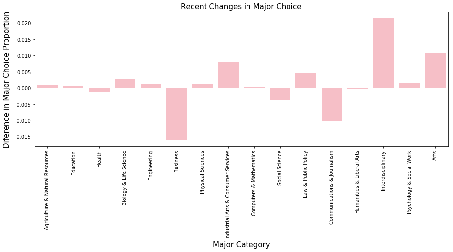
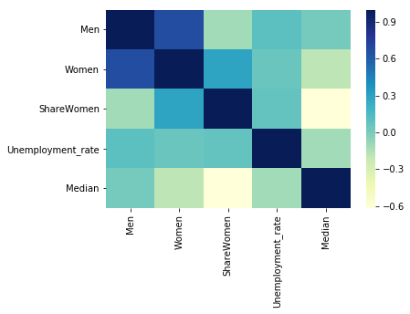
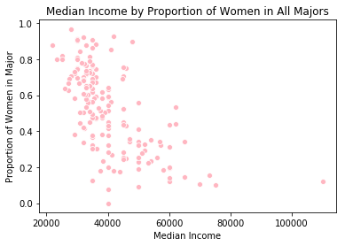
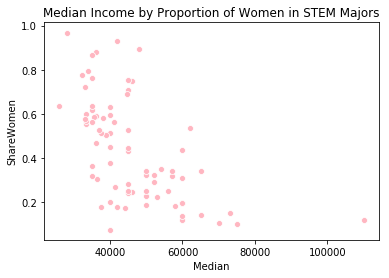

The website FiveThirtyEight has released data about student success across 173 unique majors. Below is an exploration of what these data sets can tell us about trends in post-graduate employment and students' choices of major.
It appears that the Agriculture & Natural Resources category has the lowest unemployment rate (around 4%) and the Arts category has the highest unemployment rate (just above 8%). For reference, the average unemployment rate for all major categories is 6%.
Our first plot shows the side-by-side proportions of all ages vs. recent graduates in each major category. At a glance we can see that recent grads have more interest in majors such as "Industrial Arts & Consuer Services," "Law & Public Policy," "Arts," and interdisciplinary majors. There is less interest in majors categories including "Business" and "Communications & Journalism."
We can make the visualization even simpler to interpret by just plotting the difference between major choice for all graduates vs. recent graduates. This makes it quicker for the viewer to tell which major categories had a large drop in interest (Business, Communications & Journalism) and which had an increase in interest (Industrial Arts & Comsumer Services, Law & Public Policy, Arts, and Interdisciplinary).
Just for fun, since we have the data available in the recent graduates dataset, let's look at income as it relates to the proportion of women per major category. We also have a sub-dataset specifically containing information about women in STEM majors. It could be interesting to compare our information about women in STEM to information about women in all majors.
For a broad idea of what we're working with, we can create a correlation matrix using variables related to gender, employment, and income. We can visualize our matrix using the heatmap shown below.
Looking at this heatmap for all majors, we can already see that the proportion of women in a major category ("ShareWomen") is inversely correlated with income ("Median"). In other words, a higher proportion of women in a major is related to a lower median income among graduates who were in that major. Specifically, the correlation coefficient is -0.62.
The scatterplot above provides a more detailed view of the correlation between proportion of women in each major and median income.
Focusing more specifically at women in STEM majors, there is still an inverse correlation between proportion of women in a major and median income. However, the correlation coefficient is slightly smaller, at -0.58.
Like the previous scatterplot, this plot once again shows in more detail that the proportion of women in STEM majors is inversely correlated with median income.
Taken together, these analyses suggest that there is room for improvement in connecting women with higher-paid jobs. Although over half of graduates from all majors are women, majors that have high proportions of women tend to be associated with lower incomes. For example STEM majors have a median income of $44350, which is over $8000 above the median income for all majors. However, the proportion of women drops from over half in all majors to about 43% in STEM majors. Furthermore, not all STEM majors lead to high incomes, and we tend to see that women are more prevalent among the lower-paid STEM majors.
So, is there anything hopeful we can infer from our data? Let's look at one more aspect of the data: Unemployment rates among women. Going back to our heat map for all majors, unemployment rate doesn't seem to be correlated with the proportion of women in a major. Let's look more closely at that correlation for all majors, as well as specifically for STEM majors.
Looking at the correlations between unemployment rates and the proportion of women in majors, it does not appear that the proportion of women in all majors - or specifically in STEM majors - correlated with employment rate, with correlation coefficients of 0.073 and -0.003 respectively. It appears that the proportion of women in a major is not associated with employment rates, even among STEM majors. While we don't have enough information to draw a definite conclusion about employment rates among women, this insight could be a positive indicator that there is demand for women in higher-paid jobs.